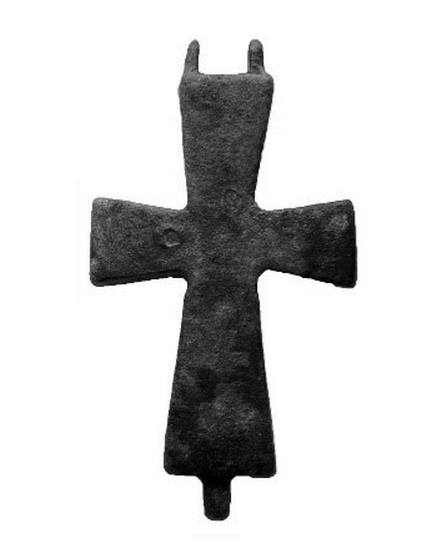

Catalog › CE-0278 · AMO2024-15
Valvă de encolpion de bronz, fără decor, cat. 15, Amorium
sec. X–XI (901–1100) · Amorium (Hisar, Emirdağ), Afyonkarahisar, Turcia · Săpăturile de la Amorium (inventar de săpătură; muzeul nu e indicat în sursă), inv. 6505
single valve of a reliquary cross, bronz; c. X–XI (901–1100); found at Amorium (Hisar, Emirdağ), Afyonkarahisar, Turcia; kept at Săpăturile de la Amorium (inventar de săpătură; muzeul nu e indicat în sursă).


Identificare
- Categorie
- Valvă izolată
- Material
- Bronz
- Stare
- Fragmentară
- Dimensiuni
- Î 60 × L 32 × Gr 2 mm
Iconografie
- Descriere avers
- Cruce latină turnată, cu brațele lărgindu-se spre exterior, simplă, fără decor.
- Limba
- Fără inscripție
Datare și atribuire
- Datare
- sec. X–XI (901–1100)
- Tipologie
- Pitarakis 2006, tip I
Descoperire
- Localitate
- Amorium (Hisar, Emirdağ)
- Regiune
- Afyonkarahisar
- Țară
- Turcia
- Context
- Necropolă / mormânt
- Anul
- 2005
- Coordonate
- 39.0209° N, 31.2944° E
- Precizia locului
- Doar localitatea
Păstrare și referințe
- Colecție
- Săpăturile de la Amorium (inventar de săpătură; muzeul nu e indicat în sursă)
- Nr. inventar
- 6505
- Bibliografie
- S. Uygun Yazıcı, Amorium Kazılarında Bulunan Madeni Haçlar, în „Propontica”, 2/4, 2024, p. 271–294 [Uygun Yazıcı 2024], p. 287, cat. nr. 15, reprodusă la Fig. 4 (p. 292). DOI: 10.56170/propontica.1536503
- Figura
- Fig. 4
- Planșe
- Uygun Yazıcı 2024, p. 292
- Observații
- Datare după autor: perioada bizantină mijlocie (sec. X–XI). S-a păstrat numai o față. Loc de descoperire: Orașul de Jos, Necropola de Nord, mormântul 94-b, campania 2005. Publicată și la Lightfoot, Koçyiğit, Yaman 2006, p. 273–274; Schoolman 2010, p. 375–377; Yaman 2012, p. 336. Coordonate: ale localității (aproximative), nu date în sursă.
Citare: Corpus Encolpiorum, CE-0278, Valvă de encolpion de bronz, fără decor, cat. 15, Amorium, --root/piese/AMO2024-15/ (accesat 2026-10-20).